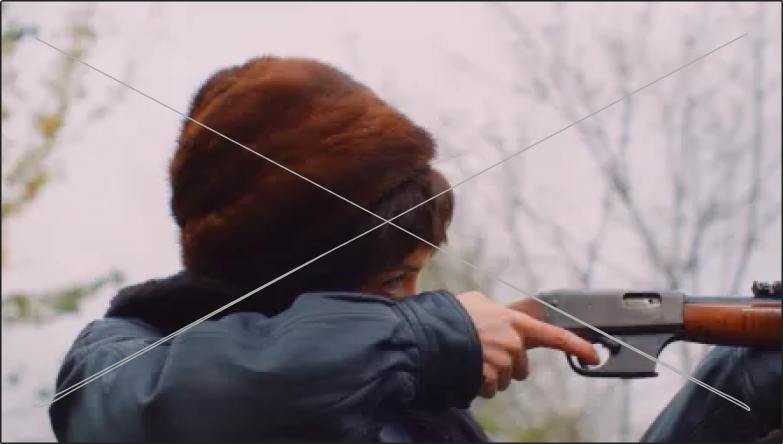
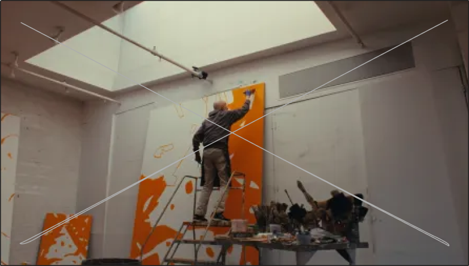
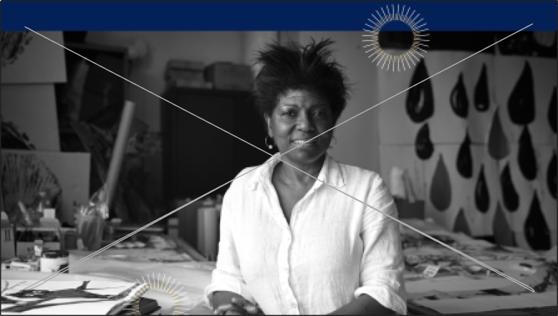
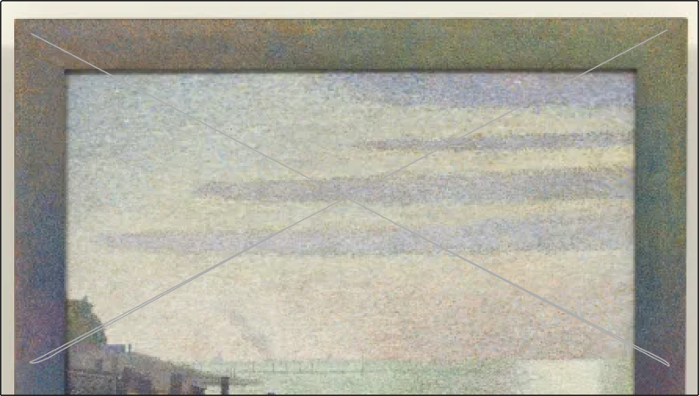

Artists

Niki de Saint Phalle Biopic Is a Convincing Portrait of an Artist in Transformation
Dec 17, 2024 5:00 am by Sarah Belmont
The film showcases the resilient spirit of de Saint Phalle.

Matthew Barney and Alex Katz Go Great Together in “The Bitch”
Dec 13, 2024 2:49 pm by Andy Battaglia
The show is on view through December 19 at O'Flaherty's in New York.

ARTnews Awards 2024 Lifetime Achievement: María Magdalena Campos-Pons
Dec 4, 2024 11:01 am by The ARTnews Awards Jury
For "Maria Magdalena Campos-Pons: Behold" at the Brooklyn Museum.

Who Was Georges Seurat and Why Was He So Important?
Nov 26, 2024 9:00 am by Howard Halle
"Some say they see poetry in my paintings," he once remarked. "I see only science."